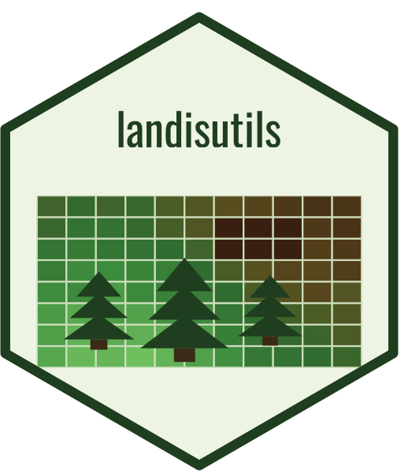
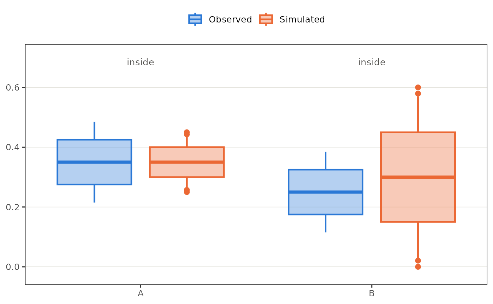

Plot observed against simulated spreads, group by group
plot_calibration_groups.RdFor each group, an observed and a simulated box side by side
(calibration_box_stats()), with diamonds at the values the caller
compares. Groups are drawn in the order of spread$group's factor levels,
or of first appearance.
Arguments
- spread
Data frame with
group,source("observed"or"simulated") andvalue, one row per draw or replicate.- reference
Optional data frame, one row per group:
group, and any ofobserved(the observed value compared),simulated(the simulated value compared, e.g. pooled over replicates),lowerandupper(an interval around the observed value) andnote(text printed above the group).- whiskers
- labels
Legend labels for the two sources.
Details
A group with no observed values in spread (a record with one value and no
resampling) has its observed side drawn from reference: a point, and a
whisker-only bar where lower and upper are given. Observed values beyond
the whiskers are not dotted, since resampling draws are not observations;
simulated replicates beyond them are. A diamond marks a compared value only
on a side drawn as a box. Whether a group passes any check is the caller's
to say, through note.
See also
Other calibration plots:
calibration_box_stats(),
calibration_events(),
calibration_plot_palette(),
plot_calibration_area_by_fuel(),
plot_calibration_convergence(),
plot_calibration_fire_counts(),
plot_calibration_fire_sizes(),
plot_calibration_loss(),
plot_calibration_replicates(),
plot_calibration_severity(),
plot_calibration_severity_by_size(),
plot_fire_regime_multipliers(),
replicate_percentile()
Examples
if (requireNamespace("ggplot2", quietly = TRUE)) {
spread <- data.frame(
group = rep(c("A", "B"), each = 60),
source = rep(rep(c("observed", "simulated"), each = 30), 2),
value = c(seq(0.2, 0.5, length.out = 30), seq(0.25, 0.45, length.out = 30),
seq(0.1, 0.4, length.out = 30), seq(0, 0.6, length.out = 30))
)
plot_calibration_groups(spread, data.frame(group = c("A", "B"), note = c("inside", "inside")))
}
